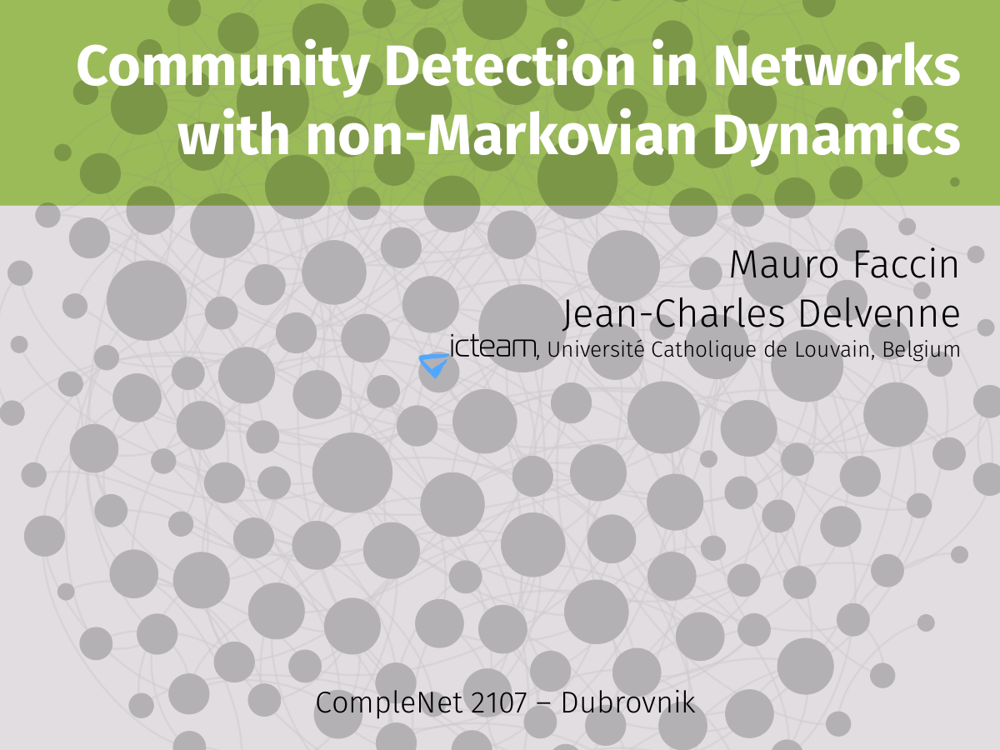
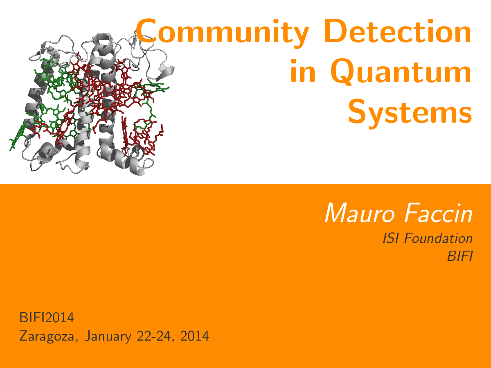

Community detection in networks with …
CompleNet 2017 @ Dubrovnik (Croatia)
Behind Communities: Dynamics Define …
ComplexNetworks 2016

Quantum Mechanics and Complex Networks
ICTEAM seminar

Beyond Communities: Dynamical Markov …
CCS 2016 @ Amsterdam (Netherlands)
Mesoscopic Structure and diffusion …
NetSci 2016 @ Seoul (South Korea)
Memory and Mesoscopic Structure in …
Complenet 2016 @ Dijon (France)
Memory and Mesoscopic Structures in …
NetSciX 2016 @ Wrocław (Polland)
Structural Controllability of EEG …
NetSci 2015 @ Zaragoza (Spain)

Quantum Approaches to Community …
ECCS 2014, Lucca (Italy)
Community Detection in Quantum Systems
Complenet 2014, Bologna (Italy)

Community Detection in Quantum Systems
Bifi 2014, Zaragoza (Spain)

Degree distribution in quantum complex …
IQC workshop on quantum computation and complex networks 2013 @ Waterloo (Canada)
Ground state spin logic
Tensor Network States and Algebraic Geometry Workshop 2012 @ Turin (Italy)
Equilibrium and Kinetics of the Ankyrin …
IV BIFI National Conference @ Zaragoza (Spain)